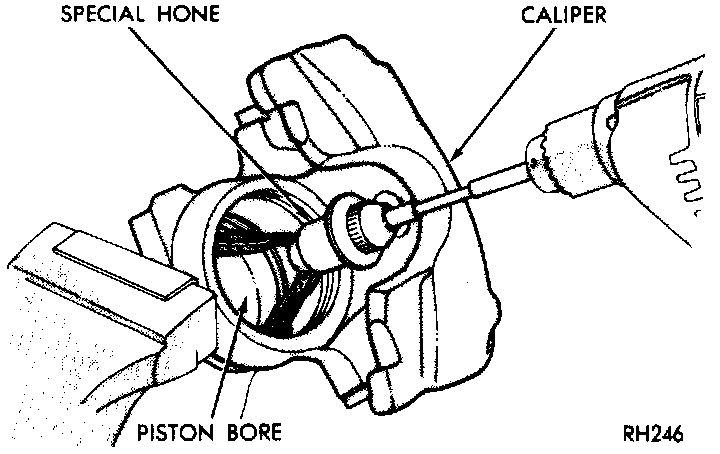

Brake Caliper: Testing and Inspection
Fig 14 Honing Piston Bore:

CLEANING
Clean the caliper components with clean brake fluid or brake clean only. Do not use gasoline, kerosene, thinner, or similar solvents. These products may leave a residue that could damage the piston and seal. Wipe the caliper and piston dry with lint free towels or use low pressure compressed air.
INSPECTION
The piston is made from a phenolic resin (plastic material) and should be smooth and clean. Replace the piston if cracked or scored. Do not attempt to restore a scored piston surface by sanding or polishing. The piston must be replaced if damaged.
CAUTION: If the caliper piston must be replaced, install the same type of piston in the caliper. Never interchange phenolic resin and steel caliper pistons. The pistons, seals, seal grooves, caliper bore and piston tolerances are different for resin and steel pistons. Do not intermix these components at any time.
NOTE: The caliper should be replaced if the bore is severely corroded, rusted, scored.
POLISHING
The bore can be lightly polished with a brake hone to remove very minor surface imperfections. The caliper should be replaced if polishing would increase the bore diameter more than 0.025mm (0.001 in).